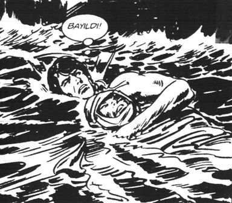

İçeriden güruh hâlinde 15’e yakın bıyık, kesif bir ter ve hacı yağı kolonyası kokusunun mükemmel kombinasyonu çıktı. Hemen hemen her bıyığın arkasında da birer adam vardı. Sarıldılar, öpüştüler, son bir gülüştüler. Hıdır’ın anlamadığı birkaç konuşma yaptılar. Genel Müdür Yardımcısı içeriye döndü.
Sessizlik...
Hıdır görüşmeye konsantre oldu. Hayatının görüşmesi. Rapor ve fikirlerini doğru anlatırsa her şey iyiye gidecekti. Yav bırak şefliği, belki belki... “Yuh artık!” dedi içinden, “O kadar da olmaz.” Yine de beyninde “imgelemeye” çalıştı. “Yaratıcı İmgeleme.”
Oooo, kendi müsteşar olmuş, bu boya kutusu da sekreter. Kıza sabah tiner ve pamuk veriyor. “Kızım şu boyalarını sil” diyor. “Pıhh” şimşek gibi diyaframına bastırdı. Ama sessizliğin içinde pısırdaması duyuldu.
Merbolin kafasını ona doğru çevirince, Hıdır direkt Atatürk resmine baktı. Onu “modelleyebilirdi.” Bir kişisel gelişim kitabında okumuştu. “Başarılı birini içselleştirir ve modellerse, yani onun yaptıklarını yaparsa o da başarılı olurdu.” Eee, boylar neredeyse aynı. Göz rengi tamam. Tam Atatürk’ü modelleyip, ardından çıpalayacakken, sekreterin deminki lafı aklına geldi; ona sinirlenmekten konsantre olamıyordu. “Sinirimi nasıl yenerim?” diye düşündü, aklına bir anda Richard Carlson geldi. Richard Baba!
Kitabın adı Ufak Şeyleri Dert Etmeyin’di. Cidden de bu başarısız kariyerini çok dert ediyordu. Kitabı aslında korsandan almayacaktı, ama Korsancı Müjdat, “Abi süper kitap. Amerika’da 5.7 milyon satmış” dediğinde “Oha!” demişti.
Harbiden kitabın kapağında “Amerika’da ilk defa bir kitap bir yılda 5.7 milyon sattı” yazısını görünce “Bu kitabı almayanda düve kadar zekâ yoktur kardeşim. Gavur okuyorsa vardır bir şey” diye düşünmüştü. Asıl Ferrari’sini Satan Bilge’den çok etkilenmişti. Kitabın yazarı Türkiye’ye gelmiş ve hiçbir ülkede Türkiye’deki ilgiyi görmemiş, “Şaşkınım” demişti.
Eee, bizde “Gavur yapıyor arkadaş!” diye bir laf var. Yalnız şeyden kıllanmıştı. Robin Sharma kitapta bilgeliği, dış görünüşün o denli de önemli olmadığını falan anlatıyordu; ama röportajda kolundaki saatin servet ettiğini fark etmişti. Bir de saçının döküldüğü belli olmasın diye kafayı tamamen kazıtmıştı. “Hani nerede kaldı doğu felsefesi, hep imaj kardeşim” diye düşündü. Sonra nerede o eski keller, hepsi delikanlı gibi keldi. Şimdi kim kel, kim asker kaçağı, kim bilge anlaşılmıyor. Bir de şeyden biraz kıllanmıştı, şeyden.
Kitapta “Parayı, hırsı kenara bırakın, yaşam felsefesi...” falan diyordu. Röportajda fark etmişti ki adam Türkiye’deki konuşması için on binlerce dolar almanın yanı sıra, o ülke bu ülke, seminerden seminere koşuyordu. Kitapta anlattığı zengin avukatın eleştirdiği hayatının aynısını Robin Sharma yaşıyordu.
Neyse “İmamın dediğini yap, yaptığını yapma.” İmam deyince aklına memleketteki Talat Ağabey’i geldi, İmam Talat Saygılı. Sen yurt dışında işletme oku, sonra gel memlekete imamlık yap.
Richard Carlson Baba’yı düşündü, yeniden. Kitap genelde, bir bitki yetiştirin, kendi cenazenizi hayal edin, kendinizi börtüye böceğe verin, bugün üç kişiye onları ne çok sevdiğinizi söyleyin, ipin ucunu bırakın gibi, birer sayfalık gübreye püsüre dokunmayan önerilerde bulunuyordu. Kitabı bitirince aklına 1987 yılında Ümit, Ali Mahmut, Özgür, Tuk, Töngür Taksim’deki McDonald’s’a gidişleri geldi. McDonald’s yeni açılmıştı. Bunlar da heyecanla gitmişlerdi. Hepsi birer hamburger yedikten sonra,
Ümit: Ne lan bu saman gibi.
Töngür: Abi harbiden tadı bir halta benzemiyor.
Özgür: Oğlum bütün ABD bunu yiyor. Baksana içerisi tıklım tıklım. Bizim ağzımızın tadı yok galiba. Yoksa bu kadar çok satar mı?
Tuk: Abi ona bakarsan “Milyonlarca sinek yanılıyor olamaz, mok yiyin” diye bir laf var.
Kık kık.
Bir ay sonra bir daha gidip yemişlerdi. “Bir daha buna para veren naha böyle olsun” diye çıkmışlardı.
Sonra bir dahaki ay gene git falan derken, şimdi çocuklarını oyuncak almaya götüren milyonlarca sinekten biri olmuşlardı. Daha veciz bir ifadeyle “Naha böyle olmuşlardı.” Kitaptaki 27. öneriyi hatırladı. 71. sayfanın girişi:
“Sizi en çok sinirlendiren ve kızdıran birini gözlerinizi kapayıp minik bir çocuk olarak hayal edin. Onların minicik yüz hatlarını ve masum bakan gözlerini hayal etmeye çalışın (yalnız bu bebeğin takma kirpikleri ve yanağında at nalı kadar allık olduğunu fark etti. Gözünü açtı). Şimdi saati bir anda yüzyıl ileriye alın. Aynı kişiyi yüz yaşında, ölüm döşeğindeyken gözünüzde canlandırın. Solgun ve yıpranmış gözlerini (gözünde yine kirpik var; göz, at kestanesine benzemiş ama pörtlek) ve dudaklarındaki hafif tebessümü görmeye çalışın.”
Bu ölüm döşeği bölümü Hıdır’ın yüzüne geniş bir gülümseme getirdi. Kadının üç ayağı bağlı tek ayağı havada, kesilen bir dana gibi titreyip hakkın rahmetine kavuştuğunu hayal etti.
“Eşşedu en la ilahe illallah ve eşedü ennaa...”
Ürpertiyle diyaframının kontrolden çıktığını hissetti.
Kadının gözlerindeki bakışı görünce gülümsemesi dondu.
– 155’i arayacağım ha, manyak mısın nesin?
O sırada çaycı İğdeli İsmail içeri girdi.
– Vayy Hıdıv abim takım çok yakışmış. Yenge al çayını buyur.
– Ayy sen tanıyor musun bu kerkenezi?
– Lülülüü (dahili telefonun sesi).
Bu, sıradanlıktan olağanüstünün dünyasına geçtiğin ve varoluşunun kutsallığını duyumsamaya başladığın zamandır.[15]
